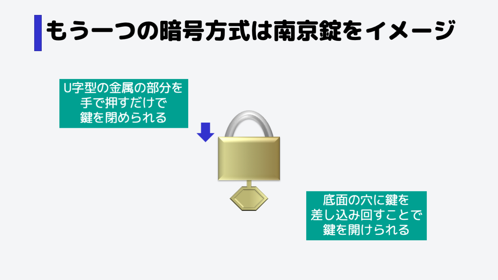
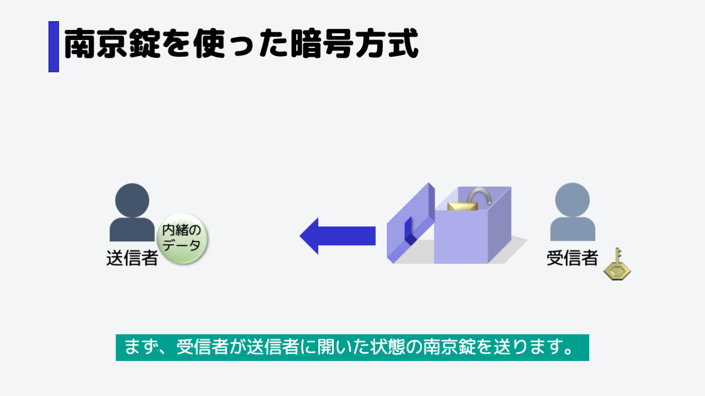

公開鍵暗号方式をイメージしてもらうために...
暗号方式にはもうひとつあります。それを理解してもらうために、南京錠をイメージしてください。
鍵をかけるときは、U字型の金属の部分を手で押します。特別な道具は必要ありません。
鍵を開けるときは、底面の穴に鍵を差し込み、回すことで鍵を開けることができます。
公開鍵暗号方式のステップ
まず受信者の南京錠を、送信者に渡します。
このとき南京錠は、開いた状態です。
それを受け取った送信者は、箱の中から南京錠を取り出し、代わりに送りたいデータを入れます。
その後蓋を閉め、もともと箱の中に入っていた空いたままの南京錠でロックをかけます。
ロックをかける際は、特別な道具は必要ありません。
鍵を閉めたら受信者に箱を渡します。
開けるための鍵を持っていない人は、中を見ることができません。
無事受け取ることができました。
受信者は、秘密に持っていた鍵を使って、南京錠の鍵を開け、箱の中身(送信者が送ったデータ)を安全に受け取ることができました。
このように、暗号化(鍵をかける)と復号(鍵を開ける)で違う種類の鍵を使う方式を、公開鍵暗号方式といいます。
暗号化する(=鍵をかける)ことしかできないので誰でも入手してもいい鍵になります。この鍵を、「公開鍵」といいます。
復号する鍵は暗号化された情報を復号できてしまうので受信者だけが秘密に持っている必要があります。この鍵を、「秘密鍵」といいます。